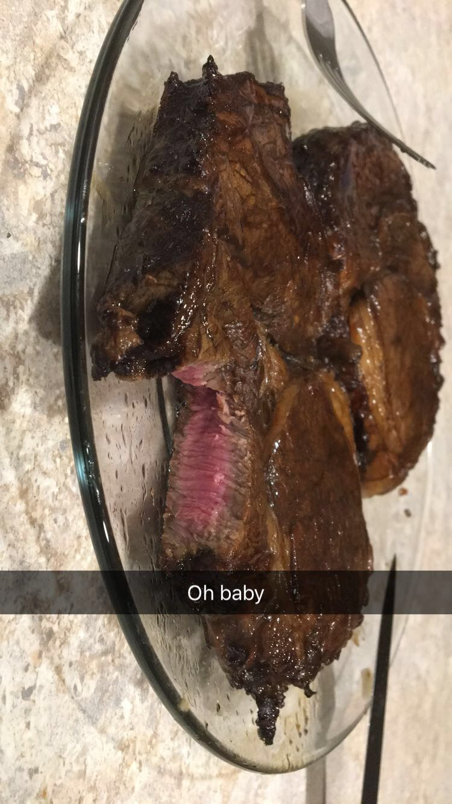

| [ Josh's page ] [ Jay's page ] Tanner's page [ Julia's page ] |
I'm a big fan of cooking, it's an art form that you can eat. Recently I've been getting into salads, they're so simple to make but the choice of which ingredients to combine can lead to a lot of complexity. This image was a recent experiment I did with a grill-less steak using the reverse broil method. I marinated this steak in worcestershire sauce, liquid smoke, smashed garlic, and just a little splash of soy sauce. You get the oven to just 225 degrees and slowly cook the steak in butter and spices for about 20-30 minutes depending on how cooked you like your steak. For the butter I typically make a compound butter by cutting up rosemary and thyme and kneading into some room temp butter, then allowing it to sit in the fridge for a day or two. The cool part about this cooking method is that while its in the oven, the color of the outside is the exact same color as the inside, so you can take a glance at it and know exactly how cooked it is. After you get your steak where you want it, then you transfer it to a pan on very high heat and sear it for about 30 seconds on each side to get some nice caramelization on the outside. Unfortnatuely, making more than one steak at a time is quite a challenge with this method, but to counter that, it's usually a good temperature to eat right off the pan and doesn't need to rest. As you can see in the picture, I seared the outside of this particular steak just a little too long.
